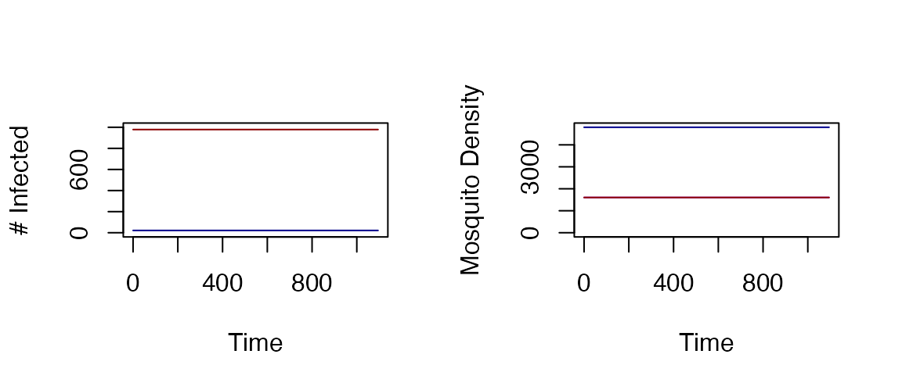

First, we define F_season and change the mean value of
Lambda. To set up a seasonality function, we pass a
parameter set from ramp.trace::makepar_F_sin:
Lo = list(
Lambda=400,
season_par=makepar_F_sin()
)We use the first model as a template for the new model, but we assign
the return value a new name model so that the original one
still exists:
Now, we solve to get the orbits every five days over a three-year period.
model <- xds_solve(model, Tmax=365*3, dt=5) After solving, we can plot the orbits.
par(mfrow = c(1,2))
xds_plot_X(model)
xds_plot_M(model)
xds_plot_Y(model, add=T)
xds_plot_Z(model, add=T)
Figure 2: Outputs with Seasonal Forced Emergence using a Trace Function